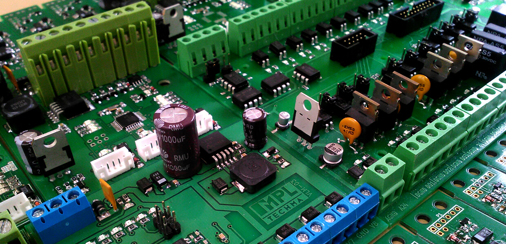

Jak liczy komputer?
Bramki logiczne to narzędzia stanowiące elementy konstrukcyjne maszyn, automatów czy robotów. Komputery, z których obecnie korzystamy, wykorzystują miliony mechanizmów logicznych nazywanych bramkami cyfrowymi (lub inaczej bramkami logicznymi). Są to elementy elektroniczne, które przyjmują sygnały binarne na wejściach i zwracają wartości 1 lub 0 – prawda lub fałsz. Bramki logiczne stanowią stałe elementy konstrukcyjne wielu maszyn. W dzisiejszych czasach najczęściej są to układy scalone, składające się z wielu odpowiednio połączonych tranzystorów. Podobny efekt można uzyskać, korzystając na przykład z urządzeń hydraulicznych lub pneumatycznych. W uproszczeniu zasada działania bramek polega na podaniu jednego z dwóch napięć elektrycznych (poziomów logicznych). Jest to napięcie o wartościach w granicach między 0 V a 0,8 V (poziom 0 – fałsz), natomiast druga wartość napięcia powinna zawierać się w przedziale między 2 V a 5 V (poziom 1 – prawda). Rozróżnienie tego typu – przy pomocy takiej wartości napięć – stosuje się w układach typu TTL (Transistor-Transistor-Logic).We wnętrzu komputera nieustannie odbywają się operacje, podczas których komputer korzysta właśnie z bramek logicznych – poziomy napięć są odpowiednikiem bitów.
